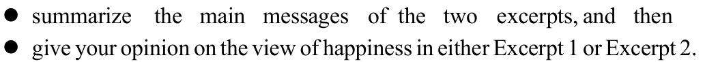
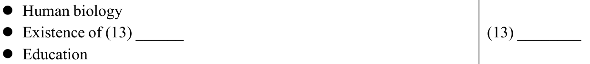

第 1 题 #
1.
- A.To fulfill her childhood dream as a teacher.
- B.To fund schools with a philanthropy agency.
- C.To share her teaching experience with educators.
- D.To help the underprivileged to live a better life.
英语专业八级 · questions · 2022
题号和章节目录由结构化数据生成。选项按卷面字母顺序显示；原标记保留在 JSON 中。
In this section you will hear a mini-lecture. You will hear the mini-lecture ONCE ONLY. While listening to the mini-lecture, complete the gap-filling task on ANSWER SHEET ONE and write NO MORE THAN THREE WORDS for each gap. Make sure what you fill in is both grammatically and semantically acceptable. You may use the blank sheet for note-taking.
You have THIRTY seconds to preview the gap-filling task.
In this section you will hear TWO interviews. At the end of each interview, five questions will be asked about what was said. Both the interviews and the questions will be spoken ONCE ONLY. After each question there will be a ten-second pause. During the pause, you should read the four choices of A,B,C and D, and mark the best answer to each question on ANSWER SHEET TWO.
You have THIRTY seconds to preview the choices.
Now, listen to the first interview. Questions 1 to 5 are based on the first interview.
1.
3.
4.
Now, listen to the second interview. Questions 6 to 10 are based on the second interview.
6.
7.
8.
9.
10.
In this section there are three passages followed by fourteen multiple choice questions. For each multiple choice question, there are four suggested answers marked A, B, C and D. Choose the one that you think is the best answer and mark your answers on ANSWER SHEET TWO.
(1) Buck did not read the newspapers, or he would have known that trouble was brewing, not alone for himself, but for every tidewater dog, strong of muscle and with warm, long hair, from Puget Sound to San Diego. Because men, groping in the Arctic darkness, had found a yellow metal, and because steamship and transportation companies were booming the find, thousands of men were rushing into the Northland. These men wanted dogs, and the dogs they wanted were heavy dogs, with strong muscles by which to toil, and furry coats to protect them from the frost.
(2) Buck lived at a big house in the sun-kissed Santa Clara Valley. Judge Miller’s place, it was called. It stood back from the road, half hidden among the trees, through which glimpses could be caught of the wide cool veranda that ran around its four sides. The house was approached by gravelled driveways which wound about through wide-spreading lawns and under the interlacing boughs of tall poplars (杨树) .At the rear things were on even a more spacious scale than at the front. There were great stables, where a dozen grooms and boys held forth, rows of vine-clad servants’ cottages, an endless and orderly array of outhouses, long grape arbors, green pastures, orchards, and berry patches. Then there was the pumping plant for the artesian well, and the big cement tank where Judge Miller’s boys took their morning plunge and kept cool in the hot afternoon.
(3) And over this great demesne (自用地) Buck ruled. Here he was born, and here he had lived the four years of his life. It was true, there were other dogs. There could not but be other dogs on so vast a place, but they did not count. They came and went, resided in the populous kennels, or lived obscurely in the recesses of the house after the fashion of Toots, the Japanese pug, or Ysabel, the Mexican hairless, — strange creatures that rarely put nose out of doors or set foot to ground. On the other hand, there were the fox terriers, a score of them at least, who yelped fearful promises at Toots and Ysabel looking out of the windows at them and protected by a legion of housemaids armed with brooms and mops.
(4) But Buck was neither house-dog nor kennel-dog. The whole realm was his. He plunged into the swimming tank or went hunting with the Judge’s sons; he escorted Mollie and Alice, the Judge’s daughters, on long twilight or early morning rambles; on wintry nights he lay at the Judge’s feet before the roaring library fire; he carried the Judge's grandsons on his back, or rolled them in the grass, and guarded their footsteps through wild adventures down to the fountain in the stable yard, and even beyond, where the paddocks were, and the berry patches. Among the terriers he stalked imperiously, and Toots and Ysabel he utterly ignored, for he was king, — king over all creeping, crawling, flying things of Judge Miller’s place, humans included.
(5) His father, Elmo, a huge St.Bernard, had been the Judge’s inseparable companion, and Buck bid fair to follow in the way of his father. He was not so large, — he weighed only one hundred and forty pounds, — for his mother, Shep, had been a Scotch shepherd dog. Nevertheless, one hundred and forty pounds, to which was added the dignity that comes of good living and universal respect, enabled him to carry himself in right royal fashion. During the four years since his puppyhood he had lived the life of a sated (饱享的) aristocrat; he had a fine pride in himself, was even a trifle egotistical, as country gentlemen sometimes become because of their insular situation. But he had saved himself by not becoming a mere pampered house-dog. Hunting and kindred outdoor delights had kept down the fat and hardened his muscles; and to him, as to the cold-tubbing races, the love of water had been a tonic and a health preserver.
(6) And this was the manner of Buck in the fall of 1897, when the Klondike strike dragged men from all the world into the frozen North. But Buck did not read the newspapers, and he did not know that Manuel, one of the gardener's helpers, was an undesirable acquaintance. Manuel had one besetting sin. He loved to play lottery. Also, in his gambling, he had one besetting weakness — faith in a system; and this made his damnation certain. For to play a system requires money, while the wages of a gardener’s helper do not lap over the needs of a wife and numerous progeny.
11. The description in Para.2 is meant to introduce ______.
12. Which of the following BEST explains Buck’s superiority over other dogs?
13. When describing Buck, the author’s tone is ______.
14. What follows the last paragraph of the passage will most probably narrate ______.
(1) Early this winter, the hundreds of climbers making plans for spring-summit attempts on Mount Qomolangma suddenly faced a new set of rules. In December, the Nepalese government decreed that it would no longer issue permits to blind, solo, or double-amputee mountaineers for any of its high peaks. Furthermore, all expeditions would have to employ at least one Sherpa (夏尔巴人向导) and would be forbidden from using helicopters to reach high camps.
(2) The regulations fit a pattern established by Nepal’s Ministry of Tourism, which in the past few years has issued a series of proclamations — climbers must announce plans to set records, trekkers must carry location beacons — that suggest improved management of its high-altitude peaks. Each new declaration generates a rush of international news reports about authorities making strides toward addressing safety at the top of the world. The truth is a lot more complicated.
(3) Mountaineering is big business in Nepal. Industry experts estimate that it generates some $26.5 million in tourism income each year, with around $l1 million of that coming from Qomolangma climbers alone. The enduring obsession of the Western media with tragic deaths on these far-off snowy peaks has resulted in a lot of free marketing. Nepal’s Ministry of Tourism, perhaps concerned that all the morbid tales might drive climbers to Qomolangma’s less used Chinese side, has gained some control of that narrative by broadcasting more positive developments through the Nepalese press. But the rules announced to date would do nothing to mitigate the dangers of climbing Qomolangma even if Nepal had the resources and conviction to enforce them, which it doesn’t.
(4) Making a huge, hugely popular mountain safer is possible. On Alaska’s Denali, fulltime climbing rangers conduct safety checks of many teams and are mobilized for rescue operations. On Argentina’s Aconcagua, rangers patrol all high camps, and until recently, permit fees included the cost of helicopter rescues. Adopting similar policies in Nepal would be a good start. A longer list of true reforms would include ordering all climbers to have previously summited a 7,000-meter peak, requiring non-guides working above Base Camp to take a course at the Khumbu Climbing Center (hundreds have done so since it was founded in 2003), and capping the total number of climbers on the mountain at 500 per season, including support staff. That last policy would both reduce dangerous crowding and help keep the mountain clean.
(5) Unfortunately, these kinds of rules are less likely than ever to be instituted on Qomolangma, owing to the rise of budget guiding companies. Beginning in the early 1990s, Western outfitters established commercial mountaineering on the Nepal side of the peak by attracting clients willing to pay as much as $65,000 to be guided to the summit. That business model dominated for more than two decades, bringing an estimated 9,000 paying climbers to Base Camp. Consequently, Qomolangma earned a reputation as a magnet for the rich, ambitious, and inexperienced.
(6) As in many markets, savvy entrepreneurs saw opportunities for disruption. Lower-cost guiding companies, some founded by Westerners and others by Nepalese, slowly gained attraction by offering Qomolangma climbs for as little as a third of the going rate among high-end outfitters. Then came 2014,when 16 Sherpas died after a serac (冰塔) collapsed onto the Khumbu Icefall, part of the main route from Base Camp to Camp I. In the wake of that tragedy, a small group of Sherpas demanded that the Nepalese government establish regulations that would improve working conditions, increase pay, boost life-insurance coverage, and provide a funeral stipend. Ultimately, Sherpas received a bit more insurance — the minimum payout was doubled from $5,500 to $11,000 — but not much else.
(7) Partly in response to media attention of these events, Nepali-owned guiding companies have continued to gain influence and market share on Qomolangma. The shift away from foreign control of the mountain is welcomed by many in the climbing community. Another positive development: lower-cost operators are increasing diversity on Qomolangma, attracting climbers from China’s and India’s burgeoning middle classes with aggressive pricing. Based on numbers from the Himalayan Database, in 2010, four Indian and eight Chinese climbers attempted the mountain, just 6 percent of the total. Last year, Chinese and Indian clients accounted for 60 of the 199 Nepal-side summits.
(8) Unfortunately, in the absence of substantive government oversight, some of the budget companies are making Qomolangma more dangerous by flooding the already overcrowded route with novice climbers led by inexperienced guides. Any operators charging less for guided climbs are prone to bolster profits through scale, booking dozens of clients on expeditions. (The most respected outfitters set a maximum of ten.)Putting aside 2014’s tragedy and 2015’s earthquake-induced avalanche, which killed at least 17 people at Base Camp,12 of the 17 climber deaths on the South Col route between 2011 and 2017 appear to have been clients of budget outfitters.
(9) During last year’s peak season, Kathmandu-based Seven Summit Treks, known for bringing large groups of climbers to Qomolangma, allegedly promoted a young support staffer named Sange to guide Qomolangma and assigned him to an older Pakistani client. The pair reached the summit late in the day and got into trouble on their descent. They had to be rescued by experienced Sherpas from another Nepalese outfitter. Sange later had all his fingers amputated due to severe frostbite.
(10) Veteran guides are reacting to all this in different ways. Adrian Ballinger, founder of the California outfitter Alpenglow, has abandoned the Nepal side of Qomolangma and is instead leading teams from China. As he explained it, the higher risk from natural dangers (avalanches, seracs, crevasses), the low standards of other outfitters, and Nepal’s mismanagement add up to an unacceptable environment. Several other prominent guides have come to the same conclusion, including Austrian Lukas Furtenbach. Others are staying put. International Mountain Guides co-owner Eric Simonson, whose first expedition on Qomolangma was in 1982, insists that upgrades in route-making through the Khumbu Icefall, and the establishment of dual ropes in areas prone to bottlenecks, have made the Nepal side safer, even as the crowds have grown.
(11) Qomolangma remains the ultimate conquest for many climbers. And while most embrace the risk of high-altitude mountaineering, few understand that the biggest dangers are all too often the result of economics, not the forces of nature. Ultimately, the top priority of many tourism officials and outfitters isn’t safety. It’s the bottom line.
15. Which of the following is NOT a safety measure according to Paras.1&2?
16. What is the main purpose of Para.4?
17. What can be inferred from Paras.5&6?
18.The case of Sange in Para.9 is cited to illustrate ______.
19.The function of “Others are staying put” in Para.10 is to
(1) Vast stretches of central Asia feel eerily uninhabited. Fly at 30,000 feet over the southern part of the former Soviet Union and there are long moments when no town or road or field is visible from your window. The landscape of stark desert, trackless steppe (大草原), and rugged mountains seems to swallow up anything human. It is little surprise, then, that this region remains largely unknown to most archaeologists.
(2) Wandering bands and tribes roamed this immense area for 5,000 years, herding goat, sheep, cattle, and horses across immense steppes, through narrow valleys, and over high snowy passes. They left occasional tombs that survived the ages, and on rare occasions settled down and built towns or even cities. But for the most part, these peoples left behind few physical traces of their origins, beliefs, or ways of life. What we know of these nomadic pastoralists comes mainly from their periodic forays into India, the Middle East, and China, where they often wreaked havoc and earned a fearsome reputation as enemies of urban life.
(3) In the past century, scholars criticized these people as destructive, dismissed them as marginal, or, at best, cast them as a harsh tonic for restoring vigor to decaying and soft agricultural societies from ancient Mesopotamia to Imperial Rome to Han China. In the 1950’s, a British archaeologist Mortimer Wheeler blamed the aggressive, chariot-driving Aryans who swept in from the steppes for the demise of the peaceful Indus River civilization after 1800 B.C., though later archaeologists dismissed that claim.
(4) But Michael Frachetti, a young archaeologist at Washington University in St.Louis, takes the radical view that Central Asians were early midwives in the birth of civilization rather than a destructive force. Frachetti argues that ancient pastoralists living in the third millennium B.C., at the time of the first great cities of Mesopotamia, Egypt, and the Indus, created a network stretching across thousands of miles that passed along goods, technologies, and ideas central to urban life. He believes they helped create civilization rather than hindering it.
(5) Most archaeological work in Central Asia during the past century has focused on the open and rolling plains that stretch from the Black Sea to Manchuria. These steppes only came to life after 2000 B.C., when horse domestication and riding suddenly turned a forbidding landscape for pedestrians into a natural highway of grass.
(6) By contrast, the areas to the south of the steppes have long been dismissed as backwaters of history. In the past, these southern mountains and deserts were considered too remote, rugged, and inhospitable to have played a role in early migrations or the emergence of urban life. The Karakum Desert, where it might rain once in a decade, covers nearly two-thirds of today’s Turkmenistan, while the perpetually snow-covered Tian Shan Mountains of western China and eastern Kyrgyzstan soar 24,000 feet into the thin air. It is there that Frachetti and a new generation of archaeologists from the United States and Central Asian nations are discovering evidence of a network of pastoralists who thrived centuries before hooves resounded on the steppes to the north. These forgotten peoples may have carried such markers of civilization as ceramics and grains across thousands of miles, two millennia before the Silk Road linked the Roman Empire with Han China. Frachetti argues that the new data emerging from the region force archaeologists to rethink their ideas about trade across Eurasia during the Bronze Age, when the first civilizations were taking form to the east, south, and west.
(7) Frachetti, who has studied modern-day pastoralists in such unforgiving landscapes as the Sahara and Scandinavia, was drawn to the southern region of Central Asia for its environmental diversity of desert, grassland, and meadows. Instead of a wasteland, he saw an ideal landscape for enterprising herders who wanted to pasture their animals in all seasons. Together with his colleagues, Frachetti began digging a decade ago in the Dzhungar Mountains of Kazakhstan. Covering nearly 500 square miles, this region lies between the Tian Shan and Altai mountain ranges, and boasts sharp peaks topping 12,000 feet, as well as harsh desert. At a site near a village called Begash, on a flat terrace enclosed by steep canyon walls alongside a small stream, the team uncovered the foundations of simple stone structures along with an array of potsherds (陶瓷碎片) and bronze and stone artifacts in stone-lined oval and rectangular tombs. The earliest layers at Begash date to at least as early as 2500 B.C., based on alpha magnetic spectrometry dating of organic remains, says Frachetti. One woman was laid to rest with a bell-shaped hooked bronze earring around 1700 B.C., according to electron spin resonance dating. Similar earrings are only found several centuries later some 600 miles to the north on the Siberian steppes, hinting at styles that moved north over time.
(8) More surprisingly, the excavators found wheat, which was first domesticated in the Fertile Crescent of the Middle East, and broomcorn millet that was first widely grown in northern China. The grains were used ritually in a burial, and radiocarbon dating of the remains dates them to about 2200 B.C., making them the oldest known domesticated grains in Central Asia. The people of Begash may not have grown either grain — there are no grinding stones, a sign of grain preparation — but instead received it via trade networks stretching from the Near East to China.
(9) Dorian Fuller, a leading expert in ancient grains based at University College London, calls the finds “important and well dated.” He adds that Chinese crops such as millet began to appear in southwest Asia around 1900
B) C., a few centuries after they reached Begash, which could mean the passage through the mountain regions was a means of gradual transmission from east to west. Frachetti speculates that the grains may have been acquired from other tribes and used for ritual purposes, and then perhaps were passed on in turn to other pastoral peoples. (10) What makes the Begash discoveries so important is that previously this region was assumed to have been a land of scattered foragers (狩猎者) until steppe peoples trickled down into the area’s valleys and mountain ranges after 2000 B.C. But it is becoming evident that the people of Begash were not simple foragers, but sophisticated pastoralists who tended their flocks, much as people in the area still do today. The inhabitants did not begin to use horses until well into the second millennium B.C., and the varieties of sheep and goat found here today appear to be related to the varieties first domesticated thousands of years before in western Iran, near ancient Mesopotamia. This indicates that Begash was “at the crossroads of extremely wide networks among Eurasian communities by the third millennium B.C.,” asserts Frachetti. That doesn’t mean that traders traversed thousands of miles in this early period. Instead, the archaeologist envisions pastoralists taking their flocks to higher pastures in the summer, where they encountered neighbors from other valleys doing the same. Thus, ideas and technologies might have passed gradually through the mountain corridors of southern Central Asia. This corridor, Frachetti believes, may have been a key conduit for Bronze Age developments farther into East Asia and Mongolia.
20. According to Paras.1&2, the nomadic pastoralists were depicted as ______ people.
21. According to the passage, what made the steppes accessible to travelers?
22. Frachetti was initially interested in the areas to the south of the steppes because of ______.
23. Which of the following statements about the wheat and millet found in Begash is CORRECT?
24. What is the significance of the Begash discoveries according to Para.10?
In this section there are eight short answer questions based on the passages in Section A. Answer each question in NO MORE THAN TEN WORDS in the space provided on ANSWER SHEET TWO.
25.Why were dogs wanted in the Northland?
此题暂无可用答案。
26. Use adjectives to describe Buck’s physical appearance and personality. You should write at least TWO adjectives for each.
此题暂无可用答案。
27. What does the author think of the rules announced so far?
此题暂无可用答案。
28. Why is there a limit on the total number of climbers per season?
此题暂无可用答案。
29. What does “to bolster profits through scale” mean in Para.8?
此题暂无可用答案。
30. What does the statement “Central Asians were early midwives in the birth of civilization” mean in Para.4?
此题暂无可用答案。
31. What examples are used to illustrate the harsh environment in the south of the steppes in Para.6?
此题暂无可用答案。
32. What did the discovery of the earrings in the tombs and those found later indicate (Para.7)?
本页部分文字层异常，已保留原图文字区域；这些区域随窗口缩放，暂不能重新换行或复制。
此题暂无可用答案。
The passage contains TEN errors. Each indicated line contains a maximum of ONE error. In each case, only ONE word is involved. You should proofread the passage and correct it in the following way:
For a wrong word, underline the wrong word and write the correct one in the blank provided at the end of the line. For a missing word, mark the position of the missing word with a “/\” sign and write the word you believe to be missing in the blank provided at the end of the line. For an unnecessary word, cross the unnecessary word with a slash “/” and put the word in the blank provided at the end of the line.
EXAMPLE
When /\ art museum wants a new exhibit, (1) an it never buys things in finished form and hangs (2) never them on the wall. When a natural history museum wants an exhibition, it must often build it. (3) exhibit
Translate the underlined part of the following text from Chinese into English. Write your translation on ANSWER SHEET THREE.
旷野与城市，从根本上讲，是对立的。 城市驱散了旷野原有的住民，破坏了旷野古老的风景，越来越多地以井然有序的繁华，取代我行我素的自然风光。
今天，旷野日益退缩着，但人们不应忽略旷野，漠视旷野，而要寻觅出与其相亲相守的最佳间隙。善待旷野就是善待人类自身。要知道，人类永远不可能以城市战胜旷野。
Read carefully the following two excerpts and then write your response in NO LESS THAN 300 WORDS, in which you should:

You can support yourself with information from the excerpts. Marks will be awarded for content relevance, content sufficiency, organization and language quality. Failure to follow the above instructions may result in a loss of marks.
Write your response on ANSWER SHEET FOUR.
Excerpt 1
What have the Romans ever done for us? Obviously the roads — the roads go without saying. Then, how about guidance for how to live in the 21st century? That seems less likely, but in fact the last few years have seen growing interest in the work of Roman Stoic philosophers who offered just that. One of them was Epictetus.
Stoicism holds that the key to a good, happy life is the cultivation of an excellent mental state, which the Stoics identified with virtue and being rational. Two fundamental principles can both be found in the Handbook, a short work summarizing the ideas of Epictetus. The first is that some things are within our control and some are not, and that much of our unhappiness is caused by thinking that we can control things that, in fact, we can’t.
What can we control? Epictetus argues that we actually control very little. We don’t control what happens to us, we can’t control what the people around us say or do, and we can’t even fully control our own bodies, which get damaged and sick and ultimately die without regard for our preferences. The only thing that we really control is how we think about things, the judgments we make about things.
This leads us to the second fundamental principle: it’s not things that upset us, but how we think about things. Things happen. We then make judgments about what happens. If we judge that something really bad has happened, then we might get upset, sad, or angry, depending on what it is. If we judge that something bad is likely to happen then we might get scared or fearful. All these emotions are the product of the judgments we make. Things in themselves are value neutral, for what might seem terrible to us might be a matter of indifference to someone else, or even welcomed by others. It’s the judgments we make that introduce value into the picture, and it’s those value judgments that generate our emotional responses.
Excerpt 2
Happiness comes from correctly managing the world around you. There are many different philosophies you can subscribe to, and the one below is just another one.
CONQUER YOUR MIND
There are not many things we have complete control over in this world. However, our mind is potentially one of them. Barring your thoughts, emotions, process, and resulting actions are completely under your control.
Training your mind is an essential skill, like learning to walk. However, not many people are showing us how.
You need to become a master of your own mind. Master musicians and race car drivers have spent thousands of hours learning how to operate a machine exactly how they wish. There are real physical limitations to those machines, but within those boundaries you can create incredible feats. And in your mind, you can change how you think. You can eliminate negativity, see solutions over problems, and connect with people. It takes work, failure, and repeated conditioning.
CONQUER YOUR BODY
Your body is simply an incredible tool to help you experience the world. It’s another machine in your life that you have to manage.
You don’t have to be a peak athlete or a fitness trainer. You do have to provide your body with quality food and exercise. It was originally so simple, because that is what we were made to do. You ate, you moved, and you were filled with unlimited energy. Unfortunately, our society has made it difficult. We’ve become addicted to short-term rewards and fast-food drugs that make daily healthy living uncomfortable.
Break free from that, and be human again. Run, jump, fight, and eat real food. This also takes hard work. But remember, as you manage your mind, it will be much easier to manage your body.
本页部分文字层异常，已保留原图文字区域；这些区域随窗口缩放，暂不能重新换行或复制。
Fields and Branches of Anthropology Literal meaning of anthropology
— (1) ______: a human as a choice-making animal (1) ________ — philosopher: a human as a rationalizing animal — anthropology: (2) ______ about human behavior (2) ________
— in films and TV shows: adventurers and heroes — their work in reality: (3) ______ (3) ________ Fields and branches of anthropology
— early Greek and Roman philosophers’ interest: (4) ______ (4) ________ — the Age of Exploration leading to the study of (5) ______ (5) ________
— (6) ______ anthropology (6) ________
‒ related subjects: anatomy, biology, etc.
‒ focus of study: evolution of human species
‒ ways of study: (7) ______ (7) ________ — cultural anthropology
‒ focus of study: (8) ______ in human societies (8) ________
‒ Kluckhohn’s book: (9) ______, one of the best introductions (9) ________ to the field
‒ subfields: archaeology, (10) ______ and ethnography (10) ________
‒ ethnography: description of human societies based on (11) (11) ________
— focus of study: human (12) ______ (12) ________ Common features in all societies

Many people believe that bilinguals have two different personalities one for each of the languages they speak, and that switching between languages makes bilinguals act differently. Whether this may seem (1) ________ unbelievable to some, research actually supports this idea.
According to various studies, bilinguals, who are also bicultural are actively involved in both of their cultures, interpret situations (2) ________ differently depending on which language they speak. Although everyone, monolinguals and bilinguals alike, are able to change the way they feel and (3) ________ interpret events, biculturals do this without realizing when switched (4) ________ between languages.
In this study, bicultural Hispanic women in the United States viewed a series of TV commercials in both of their languages and were asked to judge the main characters. Interesting enough, when viewing the Spanish- (5) ________ speaking version the participants of the study saw the main character as an independent and extroverted female. On the other hand, when viewing the English-speaking version, they looked the same character as hopeless and (6) ________ alone. This study also noted, however, that this change in reasoning only (7) ________ happened with bicultural bilinguals.
Depending on the languages spoken, biculturals will act differently. The changes are not only linguistic. As an English-Spanish bicultural, I do find out I act differently depending on which culture I am immersed in at (8) ________ the time. I am often aware of the fact when I speak to other Spanish (9) ________ speakers my voice is slightly louder and I gesticulate more when I talk to (10) ________ English speakers. Could we then say that bilinguals have two different personalities?
2023年英语专业八级真题补充卷说明：本次考试全国出现了两套试题，其中听力、阅读、翻译和写作题目相同，仅改错题不同，现将改错题补充如下：
The passage contains TEN errors. Each indicated line contains a maximum of ONE error. In each case, only ONE word is involved. You should proofread the passage and correct it in the following way:
For a wrong word, underline the wrong word and write the correct one in the blank provided at the end of the line. For a missing word, mark the position of the missing word with a “/\” sign and write the word you believe to be missing in the blank provided at the end of the line. For an unnecessary word, cross the unnecessary word with a slash “/” and put the word in the blank provided at the end of the line.
EXAMPLE When /\ art museum wants a new exhibit, (4) an it never buys things in finished form and hangs (5) never them on the wall. When a natural history museum wants an exhibition, it must often build it. (6) exhibit
By 2012, the modern use of electronic educational technology (also called e-learning) had grown at 14 times of the rate of traditional learning. (1) ________ Open education is fast growing to become the dominant form of education, for many reasons such as its efficiency and results compared to traditional (2) ________ methods. However, cost of education has been an issue throughout history and a major political issue in most countries today. Online courses often can be expensive than face-to-face classes. Out of 182 colleges surveyed (3) ________ nearly half said tuition for online courses were higher than that for (4) ________ campus-based ones. Many large university institutions are now starting to offer free or almost free full courses. It has been called the biggest change in the way we learn for the beginning of the printing press. (5) ________
Despite of favorable studies on its effectiveness, many people still (6) ________ desire to choose traditional campus education for social and cultural reasons.
The conventional merit-system degree is currently not common in (7) ________ open education as it is in campus universities, although some open universities do already offer conventional degrees. Presently, many of the major open education resources offer their own form of certificate. Due to (8) ________ the popularity of open education, these new academic certificates are raising more respect and equal status to traditional degrees. Many open (9) ________ universities are working in offering students standardized testing and (10) _________ traditional degrees and credentials.